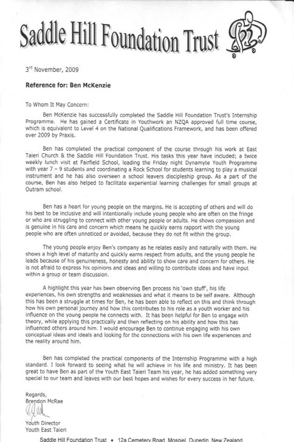
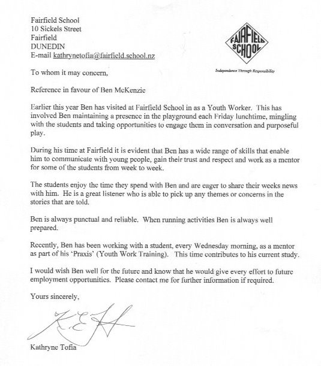
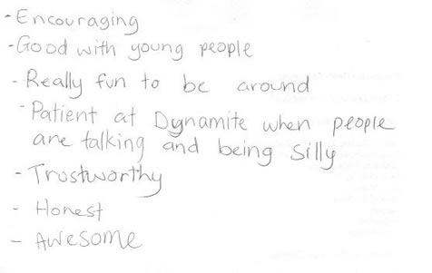
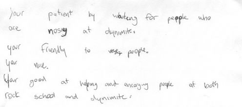
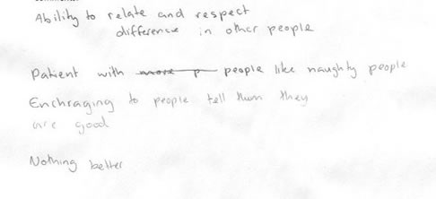
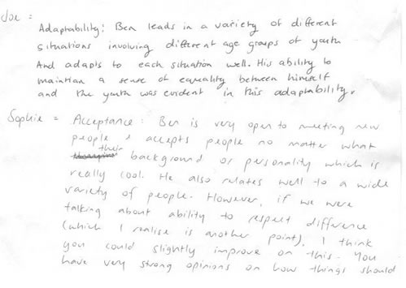
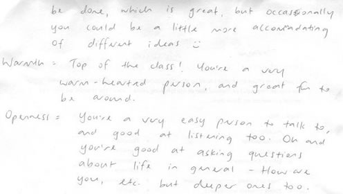
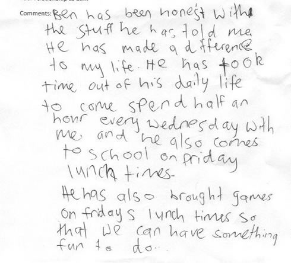
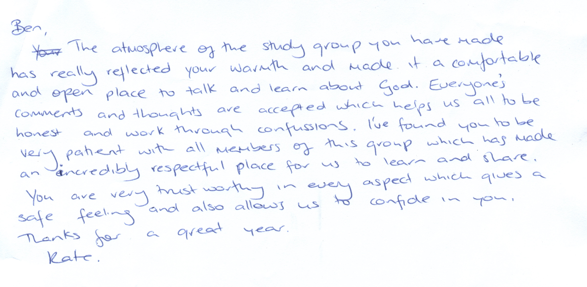
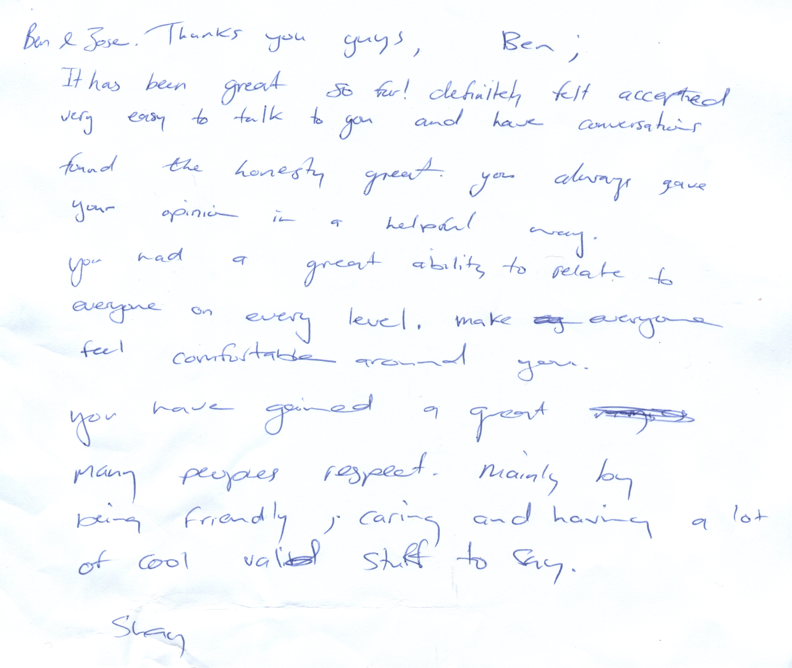

Feedback
Key People Within my Community



Parents
-----Original Message----- From: Ben & Jose McKenzie Sent: Friday, November 06, 2009 10:50 PM To: Chris & Leeanne McKinlay Subject: Praxis thing
Dear Leeanne As part of my Praxis Internship I need to provide comments from people I have worked with this year on how well I performed *some* of the following areas. I would like to know positive and helpful comments on these areas.
Thanks, Ben.
. Acceptance Ben is really good at accepting all students fromall walks of life. We have also seen Ben working hard to pass this qualityonto other young people.
. Accountability Ben is willing to stand up and be accountable in all situations - whether after a successful programme, or where things haven't gone to plan and someone needs to take responsibility for that.
. Adaptability Ben is really good at adapting programmes and ideas to fit with different circumstances. Often this year there have been lots more students turning up than planned and Ben has had to quickly think of ways to overcome the difficulties that brings.
. Genuineness Ben has a genuine heart for students - to see them grow in themselves and to see them grow in God. Ben is genuine and authentic in his own behavior both in front of students and away from them.
. Trust and safety with young people We have complete confidence that Ben is trustworthy and safety conscious with our son. When going on trips, or running any activity Ben is good at thinking through all the safety aspects and Ben is willing to seek out opinions from others to ensure he has covered everything. Ben always ensures that there are safe drivers for vehicles and a good adult/student ratio for programmes.
. Honesty Ben is honest and has high integrity in all the areas we have seen him in.
. Humility Ben can openly admit when he has made a mistake, and asks for help and advice from people with more experience when he needs it.
. Warmth Ben displays appropriate warmth which is at the right level for teenage boys to accept and know that Ben cares about them without embarrassment etc. The students in the Dynamyte trust Ben and listen to his advice and leadership.
Hope this helps, Leeanne.
Internal Virus Database is out of date. Checked by AVG - www.avg.com Version: 8.5.421 / Virus Database: 270.14.37/2466 19:39:00
Young People




 


